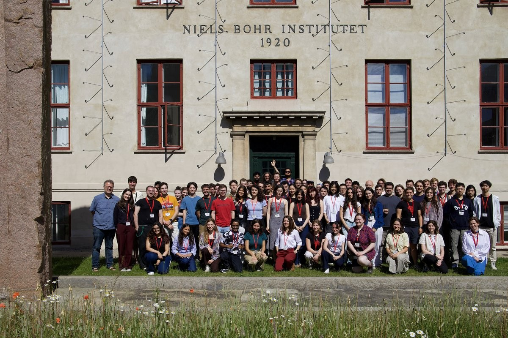
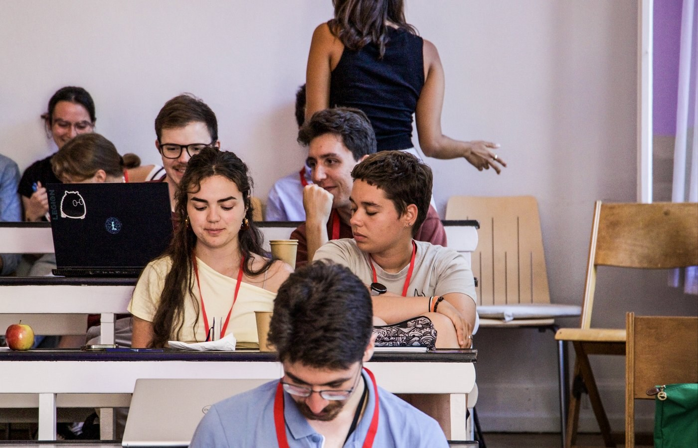
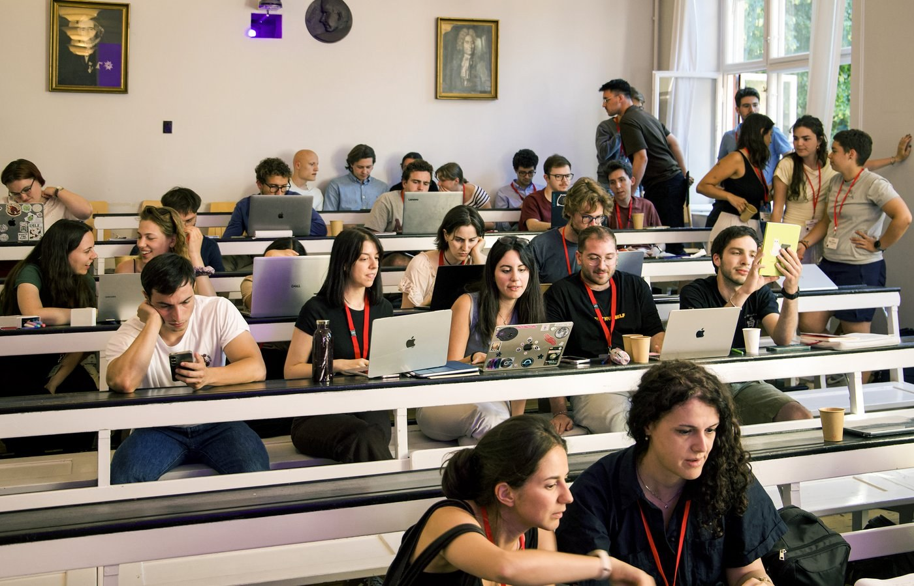

Sofía Bussières López and Alejandro Svyatkovskyy Kholyavka represented the Perturbation Theory Group at the School on Gravity: From Motion to Commotion, organised by the Center of Gravity at the Niels Bohr Institute.

The school took place from 22 to 26 June 2026 in the historic Auditorium A of the Niels Bohr Institute. It brought together graduate students and advanced undergraduate students with a background in general relativity for an intensive programme on gravitational physics and gravitational-wave science.
The scientific programme connected foundational and contemporary aspects of the field, ranging from relativistic motion and compact objects to environmental effects and extensions of Einstein gravity. The lectures were organised around four complementary themes.
Learning and exchange at the Niels Bohr Institute
During the week, Sofía and Alejandro took part in lectures, discussions and collaborative activities with early-career researchers from institutions across Europe and beyond. The school provided an opportunity to deepen their understanding of current problems in gravitational physics, compare techniques used in different research areas and establish new scientific connections.


Their participation reflects the group’s continued engagement with the international gravitational-physics community and its commitment to the advanced training of early-career researchers.